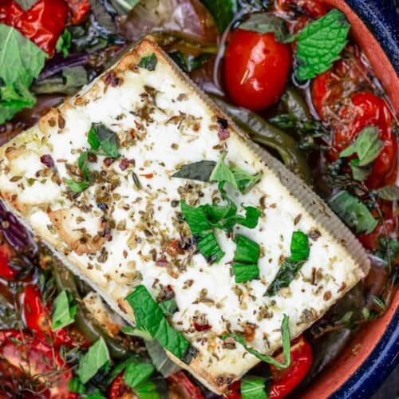

Baked Feta

Description
Warm, creamy, and luscious baked feta recipe with bell peppers, tomatoes, herbs, and a good drizzle of extra
virgin olive oil. One of the simplest and most satisfying mezze you'll make! All you need is some crusty bread
or homemade pita chips to serve.
Ingridients
- 1/2 red onion sliced
- 1/2 green bell pepper sliced intro rounds
- 1/2 cup cherry tomatos about 3 ounces, halved
- 2 teaspoon dried oregano
- 1/2 teaspoon red pepper flakes optional
- 3 to 4 fresh thyme sprigs optional
- Extra Virgin Olive Oil
- 8 oz Block of quality feta cheese, do not crumble
- fresh mint leaves for garnish optional
- Crusty bread or pita chips to serve
Steps
-
Heat the oven to 400 degrees F and adjust a rack in the middle.
-
Arrange the onions, bell peppers, and cherry tomatoes at the bottom of a ramekin or oven-safe dish. Sprinkle
with 1 teaspoon oregano, pinch red pepper flakes, and add some of the fresh thyme. Drizzle a bit of extra
virgin olive oil.
-
Add the feta on top of the arranged veggies. Season the feta block with the remaining dried oregano, pinch
of red pepper flakes and whatever remains of the fresh thyme. Drizzle a generous amount of extra virgin
olive oil on the feta and make sure to brush the sides with some of the oil.
-
Place the baking dish on the middle rack of the oven and bake for 20 to 30 minutes (and if you like, you can
stick it under the broiler very briefly to add color).
-
Serve with pita chips or toasted Italian bread.